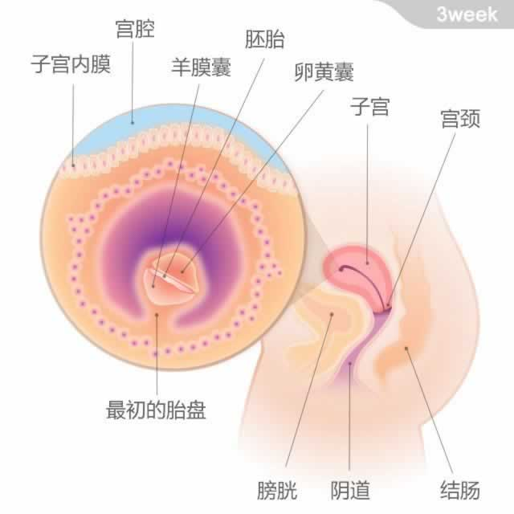

受精卵已经植入子宫内膜，胎儿从头部到臀部的长度约为0.36~1毫米。
从本周到怀孕第10周称为“胚胎期”，这是胎宝宝发育非常迅速的阶段。此时，受精卵已经植入子宫内膜，精子和卵子结合而成的细胞将不断发育和分化，在子宫内部形成两层的组织结构，被称为胚层，胎儿所有的器官和身体部位都将由这些组织发育而成。
在子宫壁上的细胞会逐渐发育，形成胎盘，提供胎儿成长所需的营养和氧气。胚胎被称为“羊膜囊”的囊状物包裹，其中就有我们常说的“羊水”。羊水会在胎儿发育过程中起到保护作用。此外，在胎盘开始发挥作用之前，一种被称作“卵黄囊”的囊状物会为胎儿制造红血球并输送营养物质。